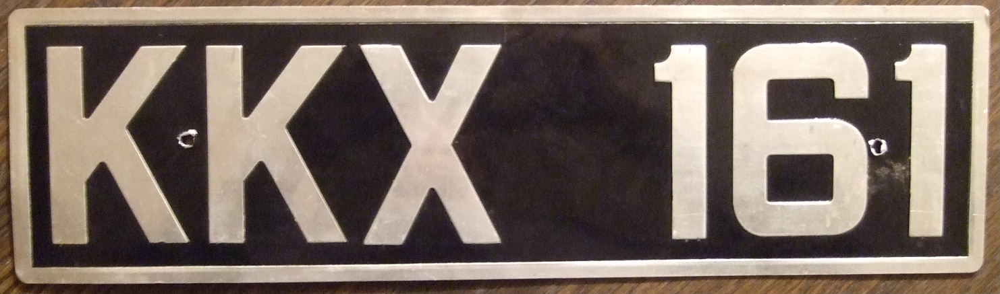

All the images that the script uses need to reside under the same origin for it to be able to read them without the assistance of a proxy. Similarly, if you have other canvas elements on the page, which have been tainted with cross-origin content, they will become dirty and no longer readable by html2canvas.
